Chapter 13 — The Cascade
The first thing Maya noticed, at 2:14 on a Tuesday afternoon in late September, was that she could see it.
The Grafana board — built out of the 3 a.m. postmortem's shame — showed submission p99 climbing like a fever chart, and outbound calls to Cortexa, the CVE-enrichment vendor, timing out in red stripes. Their synthetics had alerted eleven minutes before the first researcher tweet. After nine months of debugging by flashlight, the lights were on.
Elias was on planned leave — a cabin, a lake, deliberately no signal. Whatever happened next was Maya's.
On the war-room screen, Idris overlaid two graphs: Cortexa's status page — investigating elevated load in EU region — and Glasshouse's outbound rate to cortexa.io.
"Their status page says elevated load," he said. "We are the elevated load. We're sending them three times our organic traffic."
Maya found it in four minutes. April — when the whole site 503'd waiting on this vendor — ended with timeouts on every outbound call and a decision note in her handwriting: someday this call gets a circuit breaker. Someday never came. The sentence had ridden into ADR-006's margin as a promissory note; today it came due, with interest. What came instead, in a commit labeled temporary, was this:
// EnrichmentService — "temporary" since April
CveEnrichment enrich(String cveId) {
for (int attempt = 1; attempt <= 3; attempt++) {
try {
return cortexaClient.fetch(cveId); // connect 1s / read 2s
} catch (RestClientException e) {
log.warn("Cortexa attempt {} failed", attempt, e);
}
}
throw new EnrichmentUnavailableException(cveId);
}
Three attempts, back to back: no backoff, no jitter, no budget. Every failing call became three, so a regional outage tripled Glasshouse's outbound traffic against a vendor already failing. Inside Atrium, each enrichment tied up a thread for nine seconds of stacked timeouts instead of three — Little's law again: in-flight equals arrival rate times residence, so tripling residence tripled the threads held. Pools filled, and the backlog spread into unrelated paths until the tracker itself slowed. It was April's pool exhaustion wearing a distributed coat — Cortexa, already drowning, held underwater by its own customer.
"First move is triage, not architecture," Maya said, steadier than she felt. "Kill the retries behind the feature flag. Right now we are part of their DDoS. We stop being that, then we design under calm."
The flag flipped; within minutes the outbound graph dropped to organic levels and Cortexa's status page began, slowly, to recover.
The investigation
The retry storm explained the cascade's force, not its reach. Submission was supposed to survive Cortexa entirely — April's other fix, submit now, enrich later, an @Async hand-off to a background executor. So why was the report-detail page, a pure read path, timing out?
Priya asked the fatal question. "Wait. Isn't enrichment cached? Why are we calling them at all on the detail page?"
She pulled up her own cache panel: cve-enrichment hit rate, a flatline at zero — flat since the day the dashboards went up. The bug was older than the measurement: her refactor, mid-August.
⏸ Your call. A
@Cacheablethat compiles, runs, and returns correct data — hit rate flat at zero since an August refactor. Commit before Priya scrolls: what's wrong, and which -ility has been quietly uninsured?
The room went quiet the way it had in February, when it was Maya's own name on the commit. Priya scrolled to the code and found it:
@Service
public class EnrichmentService {
private final CortexaClient cortexaClient; // constructor-injected
public ReportEnrichment enrichmentFor(Report report) {
return this.fetchEnrichment(report.cveId()); // ← the bug
}
@Cacheable(cacheNames = "cve-enrichment")
public ReportEnrichment fetchEnrichment(String cveId) {
return cortexaClient.fetch(cveId);
}
}
"It compiles," Priya said slowly. "It runs. It returns the right data. It has just… never cached anything. Every detail view, straight to the vendor — and nobody noticed because Cortexa is fast when it's healthy."
(If you called it at the pause: the mechanism is February's — a this. call that never crosses the proxy — but the -ility isn't performance: the cache was availability insurance against exactly this afternoon, its premium lapsed without a test going red.)
Maya fetched a printed postmortem from her desk — February, her own name in the author line. PM-32: Half-saved triage states. Root cause: @Transactional method invoked via this., bypassing the proxy. Same mechanism: the annotation's behavior lives in the proxy the container hands your callers, and a this. call dispatches on the raw object behind it, so the interceptor never runs. ADR-003 had made this a named review finding; the August review read past the line. February's ghost, back in a new coat.
"I shipped this exact bug in February," she said, handing it over. "Different annotation, same mirror. Let me show you the smoke cloud." In January it had been a printed diff in green ink on Maya's desk; now a printed postmortem on Priya's — the same treatment, passed down.
February's proxy drawing was still on the Wall — the smoke cloud in front of a box labeled your actual object, the caption faded but legible: this. goes around the mirror. Maya re-inked every line and added a list underneath: @Transactional · @Cacheable · @Async · @PreAuthorize — same mirror, same trap. Elias had said that as a warning; it took seven months to come true.
At Meridian a retry was a for-loop you could see, the old voice observed. Crude, and wrong in three other ways — no backoff, no budget, no breaker — but impossible to walk around. Here, the annotation is a promise only the proxy keeps.
What the senior sees
"Say the mechanism back to me," Maya said — and heard, mid-sentence, whose cadence she was borrowing.
"Spring's annotation-driven features aren't compiled into my class," Priya said. "At startup, a BeanPostProcessor sees the annotation and wraps my bean in a proxy — a CGLIB subclass, here. The proxy holds the interceptor: check the cache, open the transaction, dispatch to the executor, then call my code. External callers get the proxy from the container. But inside my own class, this is the raw object. The call never crosses the proxy boundary, so the interceptor never runs. It's not broken — it's bypassed."
"And that's the scary part," Maya said. "It fails silently and correctly. The unit test passes — the method returns the right value. Only a hit-rate graph could catch it. Yours did; code review didn't."
She sketched the incident as a stack of absences:
Timeouts were the foundation — and the only layer that existed. Without April's timeouts — ADR-006, the latency budget — every request thread would have blocked on the unanswering vendor until none remained: the thread-pool funeral, rerun. But a timeout bounds one call. It says nothing about how many you make.
Retries without a budget multiply load on a struggling dependency. A retry is a bet that the failure was transient. It needs exponential backoff so attempts spread out, and jitter so a thousand clients don't synchronize into waves. Three immediate retries against a regional outage aren't a bet — they're a weapon pointed at something already failing.
Nothing remembered that Cortexa was down. Every request rediscovered the outage from scratch and paid the full timeout each time. That's the circuit breaker's job. Maya drew the state machine next to the smoke cloud. Closed: calls flow, failures counted in a sliding window. Past a failure-rate threshold it opens: calls fail fast — no thread consumed, no vendor touched. After a wait, half-open admits a few probes — heal and it closes, fail and it snaps open. The breaker is the system's memory of recent pain.
Nothing isolated the blast. Enrichment and core tracker work drew from the same pools, so a sick optional feature starved a healthy critical one. A bulkhead — a hard cap on concurrent enrichment calls — turns "Cortexa is down" into "enrichment is down," and nothing more.
"Fourth tool in that kit," Idris said. "Rate limiter." Maya added it. A rate limiter is a ceiling on outbound rate, enforced even when everything is green: the breaker reacts to their failures, the bulkhead caps our concurrent calls, and the rate limiter bounds what we send in the first place. "This morning's flag was a rate limiter set to zero, by hand." She penciled the numbers beside it:
resilience4j:
ratelimiter:
instances:
cortexa:
limit-for-period: 50
limit-refresh-period: 1s
timeout-duration: 0
Fifty permits per one-second window. timeout-duration: 0 means the fifty-first call fails fast instead of queueing up to dogpile the next refresh. The breaker protects you from a failing dependency — the rate limiter protects them, and your contract, from you, which is why it holds even when every graph is green.
And the async path lied about its own health. The @Async enrichment executor had an unbounded queue. Under the storm it accumulated forty thousand pending tasks while showing eight busy threads and no errors. Meridian's hand-rolled executor hid its backlog exactly this way — same lie, older clothes, Maya thought. An unbounded queue converts overload into silent latency and creeping memory instead of a signal.
"One more," Idris said. "Retries mean some calls land twice — they process our request, die before answering, we send it again. Anything that retries is at-least-once; the far side has to absorb duplicates."
"Idempotency key on every enrichment call," Maya agreed. "Keyed by the CVE, same as the cache — the same request twice is a no-op on their side. And write the rule down: at-least-once arrives with your first retry, not with a broker someday — idempotency is the precondition for every retry-shaped tool on this Wall. The durable version — write the intent in the same transaction as the data, deliver later, dedupe on the consumer — is the outbox pattern. We'll need it the day anything splits out of Atrium." She underlined it twice, not knowing how soon.
The fix
They designed under calm. The fix was February's pattern reused verbatim — when an annotation needs a proxy boundary, extract the bean. The vendor boundary became one small class whose only job was to be called from outside itself:
@Component
public class CortexaGateway { // the resilience boundary
private final RestClient cortexa; // connect 1s, read 2s
public CortexaGateway(RestClient cortexaRestClient) {
this.cortexa = cortexaRestClient;
}
@Retry(name = "cortexa")
@CircuitBreaker(name = "cortexa")
@Bulkhead(name = "cortexa")
public ReportEnrichment fetch(String cveId) {
return cortexa.post().uri("/v1/enrich")
.header("Idempotency-Key", "enrich-" + cveId)
.body(new EnrichmentRequest(cveId))
.retrieve()
.body(ReportEnrichment.class);
}
}
The verb was April's, unchanged — Cortexa enriched by POST, so the method offered no idempotency for free; the key had to build it. The key is what makes this POST safe to repeat, and that construction — not the verb — is what licenses the @Retry stacked above it. A GET wouldn't have needed the header; every retried write on this Wall does. Maya spelled it out in the PR description, because "retry only idempotent calls" gets read as a scavenger hunt when it's a construction project.
In front of it: EnrichmentCache, fifteen lines, constructor-injected, its single method wearing @Cacheable(cacheNames = "cve-enrichment", sync = true) and delegating straight through. Two beans, two proxies, every call crossing both. The hit-rate graph moved within an hour.
Priya asked the sharp review question: why not a fallbackMethod on the breaker, returning the pending badge? Maya pointed one layer up. "Anything returned underneath the @Cacheable gets cached. Breaker opens, fallback says pending, cache stores pending — and we serve 'pending' for a full TTL after Cortexa heals. The fallback lives above the cache, or the cache launders the lie." So EnrichmentService caught the failure above the cache and returned ReportEnrichment.pending(cveId) — explicit, visible, never stored. A load that throws caches nothing.
The numbers lived in configuration, tunable without a deploy:
resilience4j:
retry:
instances:
cortexa:
max-attempts: 3
wait-duration: 500ms
enable-exponential-backoff: true
exponential-backoff-multiplier: 2.0
ignore-exceptions:
- io.github.resilience4j.circuitbreaker.CallNotPermittedException
circuitbreaker:
instances:
cortexa:
sliding-window-size: 50
minimum-number-of-calls: 20
failure-rate-threshold: 50
slow-call-duration-threshold: 2s
slow-call-rate-threshold: 50
wait-duration-in-open-state: 30s
permitted-number-of-calls-in-half-open-state: 5
bulkhead:
instances:
cortexa:
max-concurrent-calls: 16
Jitter rode along as a review note — a randomization factor on each wait, via Resilience4j's interval functions — so a fleet of pods doesn't retry in synchronized waves. Slow calls counted as failures on purpose: a timeout that "succeeds" is still pain.
Ordering got its own Wall sketch, because Maya nearly got it wrong. By Resilience4j's default aspect order, Retry sits outside the breaker. Each attempt passes through the breaker and is counted. Once the breaker opens, remaining attempts fail instantly with CallNotPermittedException — which the retry ignores, so an open breaker ends the storm instead of feeding it. Flip the nesting and three attempts look like one call. The storm hides inside the breaker's statistics. "Same annotations, opposite system," she wrote. "Ordering is semantics, not style." She drew the composition on the Wall:

They kept the default order on purpose, the why written underneath: the bulkhead takes a permit per attempt, so the cap holds mid-storm; ADR-006's timeout prices one attempt's worst case.
The cache triggered the afternoon's best argument. Priya wanted Redis — shared, durable, one cache for all pods. Maya made her argue both sides. Caffeine is in-process: nanosecond reads, no network hop, nothing new to fail — but every pod warms its own copy and there's no shared eviction. Redis buys sharing at the price of a round-trip, serialization, and one more thing on the 3 a.m. dashboard. For CVE enrichment — slow-changing, harmless to duplicate, fine to lose — Caffeine with a TTL won; Redis the day they needed shared eviction. Refreshes went through @CachePut, which executes the method and overwrites the entry. A manual re-run hit @CacheEvict. And sync = true earned its one-breath defense: a hot key expiring makes every concurrent request miss at once and stampede the backend; sync lets one caller per key load while the rest wait — per pod.
The executor got bounds and a name:
@Bean(name = "enrichmentExecutor")
TaskExecutor enrichmentExecutor() {
var executor = new ThreadPoolTaskExecutor();
executor.setThreadNamePrefix("enrich-");
executor.setCorePoolSize(8);
executor.setMaxPoolSize(16);
executor.setQueueCapacity(200); // bounded: overload becomes a signal, not a secret
executor.setRejectedExecutionHandler(new ThreadPoolExecutor.AbortPolicy());
return executor;
}
They argued the rejection policy aloud. CallerRunsPolicy was tempting — backpressure for free — until Maya traced it: under overload, the request thread runs the enrichment, synchronously, against a sick vendor. April, reinvented by a constructor argument. AbortPolicy won. The @Async("enrichmentExecutor") submission point catches the rejection, the report keeps its pending badge, and a @Scheduled sweeper re-enqueues once the breaker closes. One caveat went on the PR: Boot's default scheduler is single-threaded unless you size it, so a slow sweep delays every other job. An AsyncUncaughtExceptionHandler went in beside it: a void @Async method that throws never reaches its caller — by default it's merely logged by a handler nobody watches. Theirs fired an alert.
Maya capped the marker on a line written under the smoke cloud: backpressure is a system property, not a queue setting. "Every bound — pool, queue, retries, bulkhead — is the system saying no while no is still cheap," she said. "Unbounded anything is deferred failure. Availability isn't surviving load; it's refusing the load you can't survive."
Which left the badge. Lena fought it, because that was her job. "Researchers see 'severity pending enrichment' and read 'broken.' Synthesize a medium severity while Cortexa's down. Smooth it over."
"A fallback that lies is an incident you've scheduled for later," Maya said. "Severity drives bounty math. The day our invented 'medium' turns out to be a critical, we're explaining money, not a badge. The fallback degrades honestly: what we know, what's coming, nothing invented. What a user sees while we're failing isn't an accident — it's a contract, and product co-signs it." Lena held the stare, then nodded — the same nod she'd given on timeouts in April. The badge shipped; researchers barely noticed; trust held. Fallbacks that degrade honestly entered the house style that week.
⚖ Your move, architect
The badge settled new, never-enriched reports. The harder question outlived the incident: what should the detail page show for reports enriched weeks ago, when Cortexa goes dark and cache entries age out? Lena brought renewal numbers — an hour of erroring detail pages reads as "the platform is down." Marisol brought trust: her triagers act on severity and must know how far to trust the page. Three policies went up on the Wall. Commit before reading on.
- A — Fail fast, visibly. Breaker open → the panel says so. Honest, simple, nearly free — and triage stops entirely for the duration.
- B — Queue-and-drain. Accept everything, enrich eventually, show pending meanwhile — build the durable queue now.
- C — Serve the last known enrichment, marked
STALEwith its age. "Enriched 41h ago · vendor degraded." The cache becomes history, not just an accelerator.
The trade-offs, since you've committed: A spends availability to buy simplicity and perfect honesty; Lena's renewal argument killed it on the record — a vendor's bad hour promoted to a triage outage is the cascade re-implemented as product policy. B is the right shape — for writes: it's the outbox pattern Chapter 14 builds. Mid-incident it's a redesign, not a fix, and reads can't queue — a triager looking at a report now can't be handed a ticket number. C shipped, buying availability with a named freshness tax: the cache kept entries past their freshness window, anything stale carried an age stamp, and the failure mode was decided in advance — stale under 48 hours is actionable, older escalates to manual; first-contact CVEs keep the pending badge. Lena's renewals and Marisol's trust resolved on the record, which is the point: the degraded view is a designed product contract, not whatever the exception handler left on screen.
The record went into the binder before the week was out — the longest entry yet, with the most scars to cite:
ADR-013 — Resilience composition. Context: A Cortexa regional outage met an unbudgeted retry loop ("temporary" since April); our outbound tripled, pools filled, and the cascade reached unrelated paths — while an August
@Cacheablehad never cached once (self-invocation, again). Decision: The composition order is law — timeouts under everything (ADR-006 is the floor); bounded, jittered retry only on idempotent calls, every attempt crossing the breaker so an open breaker ends the storm; a bulkhead caps concurrent calls per dependency; a rate limiter wherever the contract demands one; every external call carries an idempotency key; fallbacks degrade honestly — pending or stale-marked with age, never fabricated; async work rides bounded, named executors. Consequences: A failing dependency now costs its feature, not the site; the price is configuration that must be load-tested rather than guessed — and a review rule: a bare retry loop is a finding.
The closed incident
Elias came back Thursday, sunburned and unhurried, to a folder on his desk: timeline, postmortem, ADR-013, Wall photos, and the minutes of a review Maya had run with Cortexa's engineers — both companies' graphs on one screen, both sides' retries on the table. A closed incident, end to end, commanded by someone else.
He read it all, walked to her desk, and said only: "Who flipped the flag?"
"I did. Triage first. Architecture after."
He nodded once — the smallest nod she'd ever seen carry that much weight — and went to study the re-inked smoke cloud.
The only shadow: the CTO had read the postmortem, come away glowing about one word — resilience — and had a conference to attend in October. Next month's problem.
The debrief — Ch.13, The Cascade
Why did the
@Cacheablenever cache — and why didn't anything fail? Claim:@Cacheable, like@Transactional,@Async, and@PreAuthorize, is implemented by a proxy, so calling the annotated method throughthis.silently bypasses it. Mechanism: at startup aBeanPostProcessorwraps the bean in a proxy — here a CGLIB subclass — whose interceptor does the cache lookup before delegating; external callers hold the proxy, but a self-invocation dispatches directly on the raw object, so the interceptor never runs. Trade-off: annotation-driven behavior keeps business code declarative, but the behavior lives around your object, not in it — only calls that cross the proxy boundary get it. Failure mode: the method still returns correct results, so tests pass; the feature no-ops invisibly until an outage or a flatlined hit-rate graph exposes weeks of misses — the fix is extracting the annotated method into its own injected bean so every call crosses the proxy.
THE ARCHITECT'S LENS
- -ilities at stake: Availability under dependency failure — resilience is availability on somebody else's worst day, composed, not installed: backpressure decides what the system refuses, idempotency what it may safely retry, honest degradation what users see while it fails. Taxes paid knowingly: operability (tunables that must be load-tested, one more 3 a.m. dashboard) and cost (per-pod caches, idle bulkhead permits).
- The ADR: ADR-013 — resilience composition: timeouts under everything (ADR-006 the floor), bounded jittered retry only on idempotent calls with every attempt crossing the breaker, bulkhead per dependency, rate limiter where the contract demands it, idempotency keys, honest fallbacks, bounded executors.
- Rejected alternatives: the bare three-attempt loop (a multiplier aimed at a drowning vendor);
fallbackMethodbeneath the cache (the cache launders the lie for a full TTL);CallerRunsPolicy(April reinvented — a sick vendor's latency on request threads); synthesized severity (an incident scheduled for later); queue-and-drain mid-incident (Ch.14's outbox bought early — reads can't queue). - Fight or lean: Lean on Resilience4j's annotations and default aspect order at a dedicated gateway bean — proxy wrapping is why the container is worth inhabiting, and Retry-outside-breaker is the correct semantics. Fight every default that hides failure: the unbounded executor queue, the logged-and-forgotten
AsyncUncaughtExceptionHandler, any annotation whose effect you haven't seen on a graph.
Story anchors
- Priya's flatlined hit-rate graph →
@Cacheablebehind athis.call: the proxy trap generalizes to every annotation-driven feature - "We are the elevated load" QPS overlay → retry storms: retries without backoff, jitter, and a budget are a self-inflicted DDoS on a struggling dependency
- The "severity pending enrichment" badge → fallbacks must degrade honestly; a fallback that invents data is an incident scheduled for later
- Lena's renewals vs Marisol's trust, resolved on the record → the degraded view is a designed product contract; ADR-013 made stale-marked truth house law
Interview ammo
- Kill-shot: Why do
@Cacheable/@Asyncsilently no-op on self-invocation? Same mechanism as@Transactional: the behavior lives in a proxy interceptor created atpostProcessAfterInitialization, andthis.never crosses the proxy — extract the annotated method into a separate injected bean. - Follow-up: Retry inside or outside the circuit breaker — what changes? Resilience4j's default puts Retry outermost: the breaker counts every attempt and, once open, fails the rest fast (have the retry ignore
CallNotPermittedException); inverted, the breaker sees three attempts as one call and the storm hides from its statistics. - Follow-up: Why is an unbounded
@Asyncexecutor queue dangerous? It turns overload into silent latency and memory growth instead of backpressure — bound the queue, pick the rejection policy deliberately (caller-runs pushes a sick dependency's latency onto request threads), graph the depth, and register anAsyncUncaughtExceptionHandlersovoidasync failures alert instead of just logging. - Architect follow-up — Compose timeout, retry, breaker, bulkhead, and rate limiter for one flaky vendor: what order, and why? Timeouts under everything to price one attempt; bounded jittered retry only on idempotent calls, each attempt crossing the breaker (open = storm over); bulkhead caps what you'll spend waiting; rate limiter protects their contract even when green. Flip the nesting and the storm hides inside the breaker's statistics.
Pointers → Playbook Ch.12 · examples/ch12_extensions/AopAnnotationTraps.java, examples/ch09_microservices/CircuitBreakerSelfInvocationTrap.java